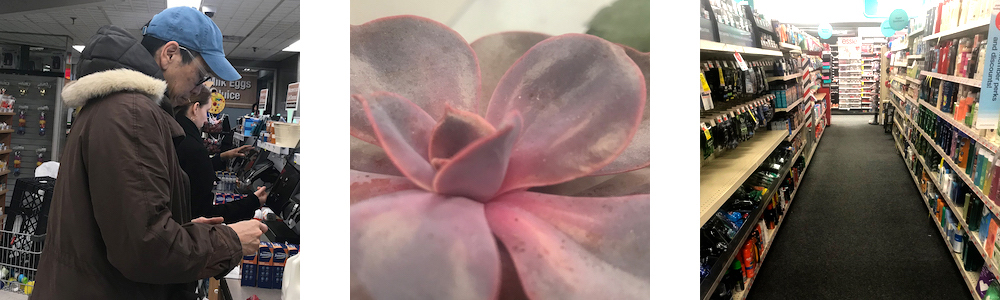

"
photos

For this project, I took pictures around NYC and then made final edits in Adobe Photoshop. In the images on this page, I focused on improving lighting and legibility, cropping, overlaying a logo, and creating banner pages.